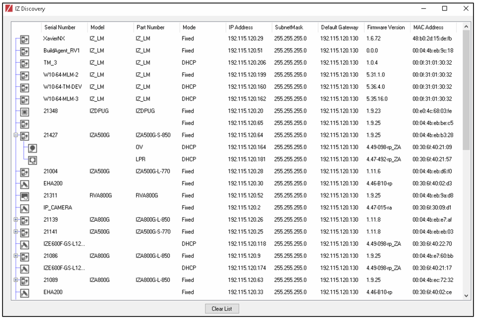

IZ Discovery User Guide
Device Discovery Software
Click to show the Table of Contents
1. Recommended Reading/Related Documents
Click to show the Related Documents table
| Doc. No. | Title |
|---|---|
IZ Discovery Utility software components |
|
(Depends on version) |
|
Software End User License Agreement (includes list of open source software) |
2. Training and Support
2.1. Training
This document does not take the place of training by Inex Technologies' certified specialists. Contact Inex Technologies to schedule training.
2.2. Support
If you have any questions, please contact our support team via our Inex Technologies Website.
3. Installing and Using IZ Discovery
The IZ Discovery utility discovers all active devices connected to the network, and displays a list of their network parameters. These devices can include cameras and computers.
|
If any device on your network is connected via wireless, IZ Discovery will not recognize the device. In addition, if the computer running IZ Discovery is connected via wireless, you will not see any devices displayed. |
-
Download the IZ Discovery software (see Section 1)
-
Run IZ Discovery
-
When IZ Discovery first runs, you may see a Windows security warning. If so, click Run.
-
If you see a message related to the Windows firewall, click Allow.
-
IZ Discovery will start and display a list of devices on the network, according to their serial numbers (see Figure 1).
-
Scroll down to find the device you are interested in. You can double-click to view/edit a specific device’s IP address parameters (see Section 4).
-
Click Clear List to refresh the discovery process.
Figure 1. IZ Discovery Utility
-
-
If IZ Discovery does not recognize a device:
-
Press the device’s reset button (if available)
-
Reset the device by shutting off power/removing the LAN cable, waiting 5 seconds, and reapplying power
-
Check the LAN cable between your laptop and the network, and the LAN cable between the device and the LAN switch. Replace the cable(s) and run IZ Discovery again.
-
4. Changing a Device’s IP Address and Network Settings
|
It is highly recommended to use a fixed IP address (not DHCP). A fixed IP address enables you to access the computer using the same URL every time, even after unexpected power outages. A dynamic IP address may change upon device reboot. Before opening the web interface, you will have to find the current IP address of the device using IZ Discovery. If you want to copy the IP address (for login to the device) you will need to uncheck the DHCP checkbox momentarily to make the address field accessible. For devices using RoadView software, you can change the IP address using the RoadView Settings tab (see Section 1). If your device is an Inex Camera System, be sure to define IP addresses for each camera (LPR and Overview), using each camera’s configuration application. It is recommended to use sequential IP addresses for the Camera System and its cameras; for example: 192.168.5.110, 192.168.5.111, 192.168.5.112 |
To change the device’s mode (fixed or dynamic [DHCP]), or IP address:
-
Select the relevant line in the list of devices and double-click on it.
-
The Network Settings window appears
-
To change the mode:
-
Check or uncheck the DHCP box
-
Click Save
-
-
To change the IP address:
-
Verify that the address is not used by any other device on the network
-
Be sure to uncheck the DHCP box
-
Enter the network address parameters
-
Write down the new IP Address and click Save
-
-
The change should be reflected in the main dialog. This can take about a minute until the IP is obtained. If you do not see the change after this time, close IZ Discovery, and then reopen it.
-
Verify that the IP address parameters have been changed to the ones you wanted. If not, you will have to log into the device (or RoadView) and change the IP address.
5. Notices and Software Precautions
5.1. Notice
Inex Technologies reserves the right to improve and enhance its product offerings. Thus, the illustrations and descriptions presented in this manual may differ in some respect from the products you receive.
Technical specifications are subject to change without notice.
In addition, please note that some figures are not drawn to scale, in order to illustrate the addressed issue more effectively.
All third-party trademarks are the property of their respective owners.
Inex Technologies cannot be held liable for technical and editorial omissions or errors made in this document; nor for incidental or consequential damages resulting from the furnishing, performance or use of this document.
Actions or circumstances that void the warranty are improper usage, improper handling without adequate electrostatic discharge (ESD) protection, defects resulting from natural disaster (fire, flood etc.) and unauthorized modifications or repair.
Power undervoltage, overvoltage and/or incorrect polarity will damage the unit and will void the warranty.
It is your responsibility to ensure that all wires connected to Inex Technologies' products have appropriate surge protection. Any damage due to electrical spikes (for example, lightning) is not covered by the warranty.
No part of this document may be reproduced in any form without permission from Inex Technologies.
5.2. Software Precautions
-
The use of any Inex Technologies' software products or any other software product referred to in this document with internet access shall be used wholly at your own risk. Inex Technologies does not take any responsibility for abnormal operation, privacy leakage or any other damages resulting from cyber attack, hacker attack, virus infection or any other internet security risks.
-
Proper configuration of all passwords and other security settings is the responsibility of the installer and/or end-user.
5.3. Legal Disclaimer
TO THE MAXIMUM EXTENT PERMITTED BY APPLICABLE LAW, THE PRODUCT DESCRIBED, WITH ITS HARDWARE, SOFTWARE AND FIRMWARE, IS PROVIDED "AS IS", WITH ALL FAULTS AND ERRORS, AND OUR COMPANY MAKES NO WARRANTIES, EXPRESS OR IMPLIED, INCLUDING WITHOUT LIMITATION, MERCHANTABILITY, SATISFACTORY QUALITY, FITNESS FOR A PARTICULAR PURPOSE, AND NON-INFRINGEMENT OF THIRD PARTY. IN NO EVENT WILL OUR COMPANY, ITS DIRECTORS, OFFICERS, EMPLOYEES, OR AGENTS BE LIABLE TO YOU FOR ANY SPECIAL, CONSEQUENTIAL, INCIDENTAL, OR INDIRECT DAMAGES, INCLUDING, AMONG OTHERS, DAMAGES FOR LOSS OF BUSINESS PROFITS, BUSINESS INTERRUPTION, OR LOSS OF DATA OR DOCUMENTATION, IN CONNECTION WITH THE USE OF THIS PRODUCT, EVEN IF OUR COMPANY HAS BEEN ADVISED OF THE POSSIBILITY OF SUCH DAMAGES.
THE USE OF ANY Inex Technologies' SOFTWARE PRODUCTS OR ANY OTHER SOFTWARE PRODUCTS REFERRED TO IN THIS DOCUMENT WITH INTERNET ACCESS SHALL BE USED WHOLLY AT YOUR OWN RISK. Inex Technologies DOES NOT TAKE ANY RESPONSIBILITY FOR ABNORMAL OPERATION, PRIVACY LEAKAGE OR ANY OTHER DAMAGES RESULTING FROM CYBER ATTACK, HACKER ATTACK, VIRUS INFECTION OR ANY OTHER INTERNET SECURITY RISKS.
For details, see the Inex Software End User License Agreement.
© Inex Technologies - All rights reserved.
Doc. No. IZDISCOVERY-MAN-001